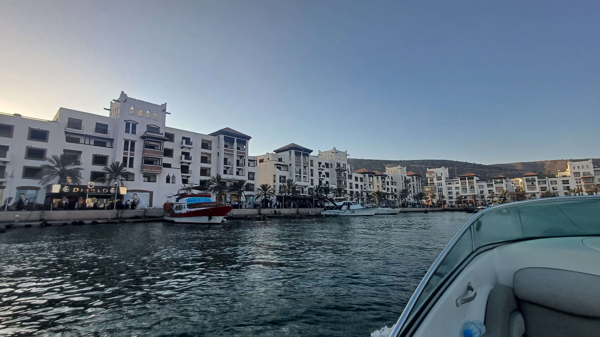
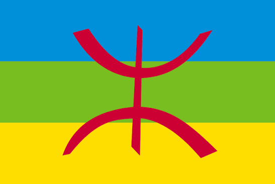
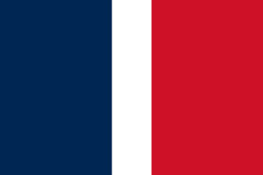
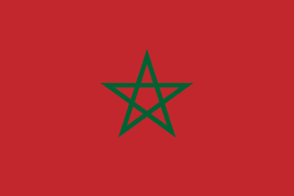
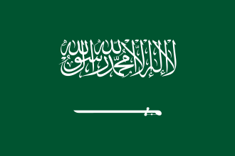
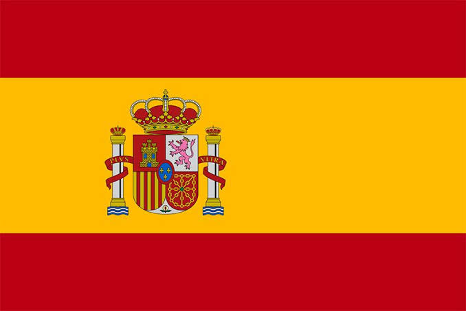
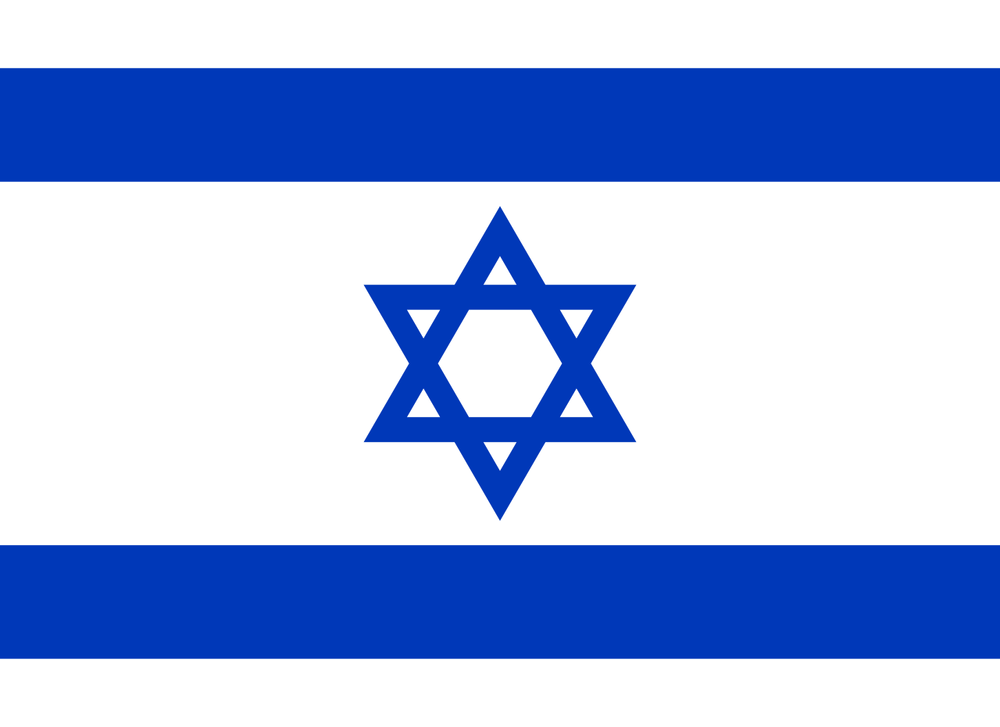

CE QUE JE SAIS FAIRE
COMPÉTENCES / 01—03

01TECHNIQUE
Compétences techniques
Maîtrise de Canva, Microsoft Office, OBS Studio, du montage vidéo et des bases du HTML/CSS.

02TERRAIN / SECOURS
Sens des responsabilités
Premiers secours, rigueur et travail en équipe.
03ÉTAT D'ESPRIT
Autonomie
Curiosité, endurance et apprentissage continu.

LANGUES
5
+2
Et deux autres en cours — l'hébreu
et l'espagnol.

Amazigh
Français
Darija
Anglais

Arabe
Espagnol
Hébreu
DU COLLÈGE À AUJOURD'HUI
PARCOURS
-
2022 – 2026
Collège
École Al Jabr, Bouskoura. Parcours dans le système éducatif français et obtention du brevet.
-
2024
ASSR
Attestation scolaire de sécurité routière.
CERTIFICATION -
2025
Formation aux premiers secours
École Al Jabr, Bouskoura.
CERTIFICATION -
2025
Design & création d'une marque de vêtements, NISR-X Division
Conception de l'identité visuelle et développement d'un projet de marque personnelle.
-
2026
Stage d'observation de 3ᵉ
Stage d'observation dans une usine de plastique et de recyclage.
STAGE -
2026 – Aujourd'hui
Lycée
École Al Jabr, Bouskoura. Classe de Seconde générale.
Travaillons
ensemble.
- E-MAIL1youssefaitelfadil@gmail.com
- VILLE / PAYSCasablanca, Maroc
- SITEYoussefAitElFadil.github.io